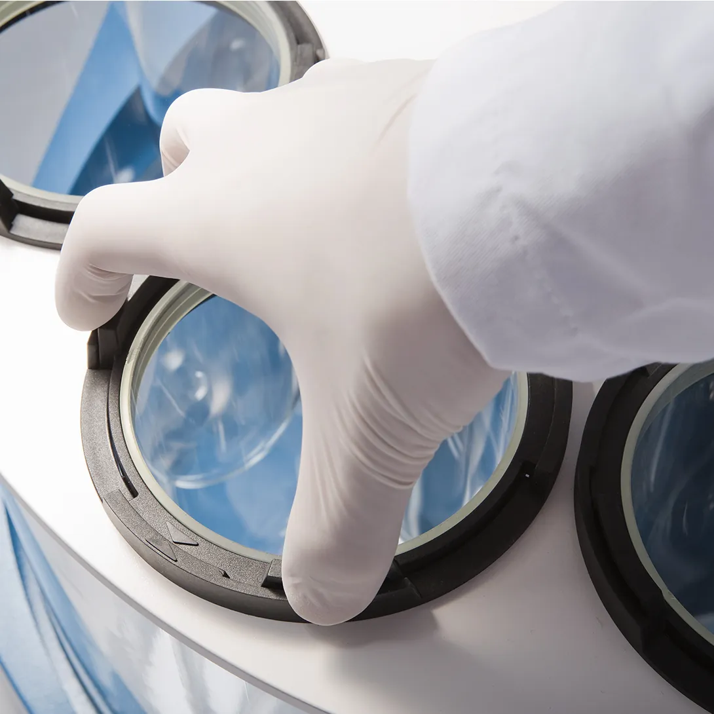

Serviços técnicos que mantêm o seu laboratório rodando.
Qualificação, manutenção, suporte e treinamento, com atendimento em todo o Brasil.
Um equipamento parado não custa só o reparo.
Custa lote retido, cronograma refeito e prazo de liberação estourado. Por isso o serviço começa antes da falha: calendário definido, registro de cada intervenção e a mesma equipe que conhece o equipamento por dentro.
Quatro frentes.
Qualificação e compliance
Evidência de instalação, operação e desempenho, com rastreabilidade metrológica.
Ver qualificação PLANOS EM CAMADASManutenção e suporte
Preventiva, corretiva e acompanhamento documental, montados para o seu parque.
Ver os planos NO CLIENTE E EM LABORATÓRIOTreinamentos e capacitação
Equipe treinada erra menos e depende menos de suporte.
Ver treinamentos CROMATOGRAFIA · ESPECTROMETRIA DE MASSASRepresentação de serviços Waters
Instalação, qualificação e manutenção em equipamentos Waters.
Ver serviços WatersComo trabalhamos.
- Equipe treinada diretamente nos fabricantes.
- Instrumentos calibrados RBC e rastreabilidade metrológica.
- Documentação técnica padronizada, pronta para auditoria.
- Planos de serviço montados caso a caso.
Equipamento parado agora?
Abra o chamado com o equipamento e o número de série. O time técnico retorna pelo canal que você escolher.
Vamos montar o plano do seu parque?
Conte os equipamentos, a carga de uso e o nível de disponibilidade que a operação exige.